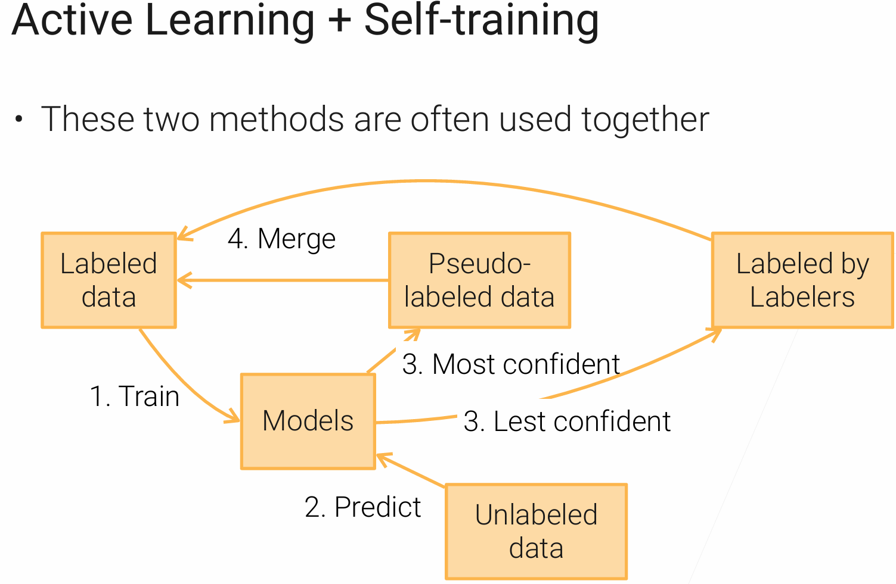

前言
老师课上呈现的内容只是引言，自己课后实践和研究才是主体。
1.X 的内容属于是工程性知识，也是 完成整个项目的 框架。（理解）
2.X 主要涉及数据的方案，配套一个数据抓取到预测的完整小项目。（实践+理解）
3.X 主要关于模型的理论，理解和掌握pytorch相关和小项目代码。（理解+记忆）
1.1 Course Introduction
机器学习的流程

- 问题定制：将实际问题转化为机器学习问题。
- 数据收集与处理：收集相关数据并进行处理——高质量数据稀缺，清洗、标注工作，数据隐私问题。
- 模型训练：选择合适模型训练，先用简单模型测试数据，如线性回归模型，若效果好可直接部署，否则再尝试复杂模型。当模型复杂度不断增加，训练成本高昂，对数据需求也更多。
- 模型部署：将训练好的模型部署到线上，要考虑模型大小、实时性等因素，如大模型需做蒸馏处理变小变快后上线。
- 模型监控与迭代：持续监控模型性能，包括预测精度、延迟等，新数据产生后重新回到模型训练和模型部署，完成迭代。要注意数据分布变化和算法公平性问题，避免模型在不同用户群体或场景下出现偏差。
Challenges and Techniques
-
Formulate problem. focus on the most impactful industrial problems (be a domain expert).
-
Data. challenges: high-quality data is scarce, privacy issues; tech: Collect/ preprocess data、 Covariate/ concepts/ label shifts、Data beyond IID……
-
协变量漂移 (Covariate Shift): 输入特征 (X) 的分布变了，但特征和标签之间的关系 (P(y|X)) 没变。例子: 你用一个地区夏天的用电数据训练了一个预测模型。到了冬天，人们的生活习惯（特征X）变了（比如开暖气而不是空调），虽然用电量和气温、时间的关系规律（P(y|X)）可能没变，但由于输入数据的分布完全不同，模型的预测会很不准。
-
概念漂移 (Concept Drift): 特征和标签之间的关系 (P(y|X)) 本身发生了变化。也就是“概念”本身变了。例子: 一个垃圾邮件过滤模型。一开始，“免费”、“中奖”等词汇是垃圾邮件的强特征。但后来垃圾邮件发送者学聪明了，开始使用更隐蔽的词汇。这时，“什么是垃圾邮件”这个概念本身就发生了漂移，旧模型就失效了。经济形势变化导致的用户购买偏好改变也是一个典型例子。
-
标签漂移 (Label Shift): 标签 (y) 的分布变了，但 P(X|y) 没变。例子: 医院用历史数据训练了一个疾病诊断模型，历史数据中某种疾病的患病率是1%。突然这种疾病爆发，新病人中患病率变成了10%。病人的症状（特征X）和疾病（标签y）之间的关系没变，但是不同标签的比例变了，这也会影响模型的表现。）
-
不独立同分布的数据 (data beyond IID(Independent and Identically Distributed)): 不独立 (Not Independent): 时间序列数据、社交网络数据(你朋友的点赞行为会影响你的行为)、空间数据(一个地区的房价会受到邻近地区房价的影响)。不同分布 (Not Identically Distributed): 上面提到的各种数据漂移就是最典型的例子, 去年和今年的用户数据就不是来自同一个分布。
-
Train models. challenges: ML models are more and more complex, data-hungry, expensive; tech: Model validation/ combinations/ tuning、 Transfer learning、 Multi-modality……
-
模型验证(Model Validation): 最常见的方法是交叉验证 (Cross-Validation)。比如，将数据分成5份，轮流用其中4份训练模型，剩下1份测试模型，重复5次，最后取平均性能作为模型的最终评估结果。比把数据分成训练集和测试集测试一次要可靠得多。
-
模型组合(Model Combinations): 常见的方法有 Bagging（如随机森林）、Boosting（如XGBoost, LightGBM）和 Stacking（将多个模型的输出作为新的输入，再训练一个最终模型）。
-
调优(Tuning ): 常见的方法包括网格搜索 (Grid Search)、随机搜索 (Random Search) 或更高级的贝叶斯优化 (Bayesian Optimization)。
-
迁移学习(Transfer learning): 找到一个已经在海量数据集上训练好的模型。例如，一个在数百万张互联网图片上训练过的图像识别模型（如ResNet, VGG），将这个模型的绝大部分结构和权重拿过来，只替换或微调最后几层，用我们自己少量的数据（比如，一个只有几百张图片的猫狗分类任务）进行再次训练。
-
多模态(Multi-modality)：让一个模型能够同时理解和处理来自多种不同类型的数据（图像、文本、声音、视频、表格数据等），并从中融合信息做出决策，如商品推荐中， 一个先进的电商推荐系统可能会结合商品的图片、用户的文字评论以及商品的价格和类别（表格数据）来决定是否向你推荐它。
-
-
Deploy models: challenges: Heavy computation is not suitable for real-time inference, GPU for inference is costy. tech: Model deployment、 Distillation.
-
Monitor: data distributions shifts, fairness, Explainability.
机器学习中的人员

- 领域专家：了解商业和产品，明确重要数据及部署机器学习模型的合适位置，确保机器学习用在关键处。
- 软件开发工程师（SDE）：开发和维护大量代码与组件，管理模型训练资源，确保模型训练、部署及维护的高效稳定。
- 数据科学家：全栈工程师，负责数据挖掘、模型训练与上线等全流程工作，行业人才稀缺，软件工程师和领域专家可成长为数据科学家。
- 机器学习专家：针对公司重要产品，对模型进行定制化，根据产品特点调整模型，以适应特定应用场景。
- 成长路线：SDE+Domain_experts -> Data scientists -> ML experts
1.2 Data Acquisition
核心流程：先找数据，找不到再造数据

业务问题转换成机器学习问题->数据够不够
- 情况一: 有足够的数据。 (后续课程会讲)
- 情况二: 数据不足。这时你有两个选择：
- 寻找外部数据源 : 找到其他可用的数据集并整合。
- 生成数据: 大致知道数据应该是什么样的，尝试生成数据。
数据发现与整合
概念区分
这里的核心是区分“数据集 (Dataset)”和“数据 (Data)”。数据集通常是别人已经为你清洗整理好、可以直接用于机器学习的；而数据则是原始的、需要大量处理的。
-
为研究新算法寻找数据集 (For Research):
- 目标： 检验新算法的普适性和鲁棒性。
- 策略： 需要寻找多个、不同类型的基准数据集 (Benchmark Datasets)。
- 举例： 假设我要开发一个新的超参数调优算法。我会找10-20个中小型数据集，它们应该涵盖不同领域（如图像、文本）、不同特点（如类别特别多、噪音特别大），这样才能全面评估我的算法在各种场景下的表现；如果我要训练一个大型深度神经网络，我需要的是一个像ImageNet那样的超大规模数据集，才能发挥出大模型的潜力。
-
为产品应用收集数据 (For Application):
- 目标： 解决一个具体的业务问题。
- 策略： 几乎不可能有现成的数据集，必须亲自去收集原始数据。
- 举例： 做无人驾驶。我们会在车上装满各种传感器（摄像头、激光雷达），然后雇人去开。需要在不同的天气、时间、路况（车流量）下尽可能多地采集数据，确保数据能够覆盖未来可能遇到的各种驾驶场景。
知名数据集
这些数据集的来源主要分为两大类：网络爬取 和 人工采集。
- MNIST: (人工采集) 最经典的入门数据集之一，由美国人口普查局的员工手写的数字构成，是几十年前收集的。
- ImageNet: (网络爬取) 引领深度学习浪潮的关键数据集。它的数据来自各大图片搜索引擎（Google、百度等）。方法就是搜索关键词（比如“猫”），把返回的图片全部爬下来，再通过大量人工标注，把其中的噪音（比如卡通猫、狮子等）去掉。
- KITTI: (人工采集) 无人驾驶领域的标杆数据集，通过在真实道路上行驶的车辆，记录下摄像头、激光雷达等各种传感器的数据。
- Amazon Review: (网络爬取) 爬取亚马逊网站上的所有用户商品评论，用于情感分析等任务。
- SQuAD: (网络爬取/处理) 从维基百科（Wikipedia）中提取“问题-答案”对，比如从文章中找到“某人生于哪一年？”并抽取出答案。
- LibriSpeech: (网络爬取/处理) 一个包含1000小时有声读物的语音数据集，用于语音识别和语音合成。
数据集来源
- Papers with Code: 学术研究首选。它不仅整理了论文中常用的数据集，还附带了各种算法在该数据集上的表现排名（Leaderboard），非常适合进行算法效果对比。
- Kaggle Datasets: 一个机器学习竞赛平台，除了竞赛数据，还有大量用户（通常是数据科学家）上传的各种数据集。因为是用户上传，质量参差不齐，需要自己甄别。
- Google Dataset Search: 一个专门为数据集打造的搜索引擎，可搜索全网的数据集资源。
- 各种工具包自带数据集 (Toolkits): 很多流行的开源库都内置了一些经典数据集，方便学习和测试。例如
TensorFlow Datasets和Hugging Face(专注于海量文本数据集)。 - 机器学习竞赛 (Competitions): 会议或公司会举办竞赛。这些数据集通常质量很高、场景新颖，并且紧贴业界前沿问题（比如公司拿出部分真实业务数据来寻求更好的解决方案）。
- 云平台开放数据 (Open Data on AWS): 包含上百个超大规模的原始数据集。例如，美国气象卫星每小时产生的几个T的原始数据，或把整个互联网爬下来的Common Crawl数据集。
- 公司内部的数据湖 (Data Lake): 如果你在公司工作，内部通常会有一个“数据湖”，汇集了所有产品线的数据。可能需要向其他团队申请权限，同时必须注意数据隐私和合规问题。
主要类型对比
| 类型 | 优点 (Pros) | 缺点 (Cons) |
|---|---|---|
| 学术数据集 | ① 干净，经过了大量预处理。 ② 难度适中，太难没人做，太简单体现不出算法差异。 ③ 开箱即用，适合快速验证算法。 |
① 选择有限，来来回回就那些。 ② 过于简化，与真实工业界差距巨大。 ③ 不适合直接用于产品。 |
| 竞赛数据集 | ① 更接近真实应用，通常源于一个真实的业务问题。 ② 场景比较新颖。 |
① 仍然经过了简化和处理，隐藏了真实数据中最棘手的部分。 ② 主题局限，集中在电商等热门领域。 |
| 原始数据 | ① 灵活性极高，能满足任何定制化的产品需求。 ② 能真正解决你的业务问题。 |
① 处理极其耗时耗力，这正是数据科学家60%-70%时间花的地方。 ② 需要庞大的工程支持（数据流、存储等）。 ③ 涉及复杂的法律和隐私问题。 |
数据整合
在工业界，数据通常分散存储在不同的地方（数据库表）。数据整合就是把这些来自多源的数据融合成一个连贯、信息丰富的数据集（要求对SQL有所掌握）。
- 举例： 一个房产公司的数据可能存在三张表里：
- 房屋信息表 (House Info): 面积、位置等，信息相对稳定，不常变动。
- 销售记录表 (Sales): 上市时间、成交价等，交易频繁，更新很快。
- 经纪人信息表 (Agents): 经纪人ID、姓名等，也相对稳定。
- 方法： 使用
JOIN操作，通过一个共同的 键 (Key)（比如房屋ID）将这些表连接起来，形成一个包含所有信息的宽表。 - 需要解决的关键问题：
- 识别正确的Key：用哪个ID来连接？
- 处理缺失行 (Missing Rows)：一个房子在A表有记录但在B表没有怎么办？（使用
INNER JOIN还是LEFT JOIN取决于你的需求）。 - 处理重复列 (Redundant Columns)：不同表可能有相同的字段名。
- 解决数值冲突 (Value Conflicts)：两个表都记录了房价，但数值不同。可能是单位不一致（
$1000vs1k），也可能是数据录入错误。你需要定义规则来解决这些冲突。
数据生成
找不到也收集不到足够的数据时，可以自己“创造”数据。
生成合成数据
- 使用GANs (生成对抗网络): 可以生成高度逼真的数据。
- 例子1： ThisPersonDoesNotExist.com 网站上的人脸，全是由GAN生成的，可以用来扩充人脸识别数据集。
- 例子2 (Amazon): 为了给家具（如一盏灯）制作商品展示图，不用真实去装修一个房间然后拍照，而是用算法生成一个逼真的客厅场景，再把灯无缝地“P”进去。
- 使用模拟器 (Simulation): 在虚拟环境中模拟真实世界，生成数据，这在自动驾驶等领域非常常用。
数据增强
- 图像增强 (Image Augmentation): 对一张图片进行旋转、裁剪、拉伸、增加噪点、改变颜色等操作，一张图可以变成很多张。
- 文本增强 (Text Augmentation) - 回译 (Back-Translation):
- 这是一个非常聪明的技巧。比如你有一句话：“I have no time.”
- 步骤1： 把它翻译成另一种语言，比如法语。
- 步骤2： 再把法语翻译回英语，可能会变成：“I do not have time.”
- 结果： 句子的核心语义没变，但语法和用词发生了变化，你就免费获得了一个新的训练样本。
1.3 Web Scraping
概念
Web Scraping (数据抓取) 和 Web Crawling (网络爬虫) 有本质区别：
- Crawling (爬虫): 目标是索引整个互联网，像搜索引擎一样把整个网页都下载下来。
- Scraping (抓取): 作为数据从业者的核心任务，我们更关心从特定网站的页面中，提取出我们感兴趣的结构化数据（如价格、地址、评分），并最终整理成一张干净的表 (Table)。
核心策略:尽可能模拟一个真实的人类用户。
- 模拟浏览器：用requests，设置header；从0到1学习python爬虫
- 使用IP地址池：同一个IP在短时间内进行大量访问，是机器人最明显的特征，会被网站迅速封禁 —— 使用大量的IP地址轮换访问。IP来源: 公有云是获取大量IP最便捷、成本最低的方式。例如，AWS拥有全球IPv4地址的1.75%，你每启动一台新的云主机，几乎都能获得一个新的IP。
实战案例：抓取 Zillow 房产数据
我们以抓取美国房产网站 Zillow 上斯坦福附近已售房屋的数据为例。（对HTML基础有要求）
目标页
- 列表页URL:
https://www.zillow.com/stanford-ca/sold/ - 规律: URL结构清晰，城市(
stanford-ca)和页码(2-p/)是可变参数。通过修改这些参数，我们可以遍历所有城市的房产列表页。
详情页
在列表页，我们需要拿到每个房子的独立ID，才能访问其详情页。
- 用浏览器自带的开发者工具 (F12)定位到包含房屋链接的HTML元素，发现它们通常是
<a>标签，且有一个特定的class，例如list-card-link。 BeautifulSoup解析HTML，筛选出所有符合条件的<a>标签，并从其href属性中提取出房子的唯一ID。
|
|
- 有了ID后，我们就可以拼接出每个房子的详情页URL，例如：
https://www.zillow.com/homedetails/19506780_zpid/，然后抓取这些页面的HTML。
提取结构化数据
- 方法: 用浏览器自带的开发者工具 (F12)，鼠标悬停在你想要的数据上（比如成交价），查看它在HTML中的位置、标签和
class。 - 例子 (提取成交价和日期):
- 发现这两个信息都包含在一个
class为ds-home-details-chip的<div>容器内的<span>标签里。 - 观察发现文本特征分别是 “Sold:” 和 “Sold on”。
- 发现这两个信息都包含在一个
|
|
通过重复这个“Inspect -> 定位 -> 提取”的过程，我们就可以将整个网页非结构化的信息，转换为一张包含价格、日期、卧室数、面积等字段的结构化数据表。
抓取图片数据
图片数据对于多模态模型非常重要。
- 方法: 图片的URL通常也有规律可循。通过检查网页源码，我们可以使用正则表达式 (Regular Expression) 批量匹配出所有图片的URL。
- 老师的例子: Zillow的图片URL有固定模式，可以通过正则表达式匹配出图片ID，再套用模板拼接出高清大图的URL。
|
|
成本与性能分析
- 硬件选择: AWS EC2
t3.small实例 (2GB内存, 2 vCPU)。关键在于内存，因为浏览器本身非常耗内存，CPU和带宽通常不是瓶颈。 - 成本优化: 使用**竞价实例 ** 可降低成本。
- 性能估算:
- 速度: 单页抓取约3秒。这个速度比较合理，过于频繁的请求会被视为攻击。
- 规模: 使用100台实例，抓取100万个房产页面大约需要8.3小时，硬件成本仅为$16.6。
- 额外成本:
- 图片抓取: 抓取成本与图片数量成正比 (抓2000万张图 ≈ 抓2000万个网页)，约$300。
- 数据存储: 这是持续性的大头开销。在云上存储几个T的图片，每月可能需要数百美元。
- 成本优化: 将图片分辨率降低，或将数据下载到本地硬盘存储，成本会低得多。
法律与道德红线
- 【禁止】抓取需要登录才能访问的私有数据。
- 【禁止】抓取涉及个人隐私的敏感信息（如健康、医疗档案）。
- 【禁止】抓取有明确版权的内容（如音乐、付费视频）。
- 注：很多数据集（如Kinetics）只提供视频ID列表，让你自己去下载，就是为了规避版权问题。
- 【必须】遵守网站的
robots.txt协议和服务条款 (Terms of Service)。 如果对方明确禁止抓取，就应该遵守。 - 【建议】如果你计划将抓取的数据用于商业盈利，务必咨询律师。
1.4 Data Labeling
核心问题：有了数据但无标注或标注较少。

获取到原始数据后，下一步是获取标签。根据**“是否有初始标签”和“是否有预算”**，我们可以选择不同的技术路径。
- 场景一：有少量标签，没预算 → 半监督学习 (Semi-Supervised Learning)
- 场景二：没标签，有预算 → 众包 (Crowdsourcing)
- 场景三：没标签，没预算 → 弱监督 (Weak Supervision)
1. 半监督学习
适用场景：有一小部分高质量的标注数据（比如来自用户的明确反馈），以及海量的未标注数据（比如大部分用户的浏览行为）。目标是利用这些海量的未标注数据，来提升模型性能。
（核心思想：SSL依赖于几个关键假设，让我们能从无标签数据中推断信息。连续性假设 (Continuity): 特征相似的样本，其标签也可能相同。聚类假设 (Cluster): 数据天然地倾向于形成簇，同一个簇内的样本有相同的标签。流形假设 (Manifold): 高维数据实际上分布在一个低维的内在结构上，这让我们可以通过降维等方式发现其本质。）
关键技术自训练：自训练是SSL中最简单且常用的一种方法，其工作流程是一个迭代增强的循环。
- 训练 (Train): 使用现有的少量已标注数据，训练一个初始模型。
- 预测 (Predict): 用这个模型去预测所有未标注数据的标签。
- 筛选与合并 (Filter & Merge): 挑选出模型预测置信度非常高的样本，将这些“伪标签 (Pseudo-labels)”数据加入到原始的标注数据集中。
- 举例： 在一个三分类任务中，如果模型预测一个样本属于A类的概率是98%，而B和C类各1%，这就是高置信度。如果预测结果是A、B、C类的概率都在33%左右，这就是低置信度，我们会暂时丢弃这个样本的伪标签。
- 重复: 用合并后的、更大的数据集重新训练模型，然后回到第2步，不断循环。

实践要点: 使用计算成本高昂但性能强大的模型，如大型深度神经网络或模型集成(Ensemble/Bagging)，以获得尽可能准确的伪标签。
2. 众包
适用场景：没有初始标签，但有预算。（如ImageNet数据集就是通过Amazon Mechanical Turk (AMT)平台，花费数年和数百万美元标注完成的）
成本估算：图像/文本分类： ~$0.012 / 每个标签；画边界框 (Bounding Box)： ~$0.024 / 每个框；语义分割 (Semantic Segmentation)： ~$0.84 / 每张图 (成本高，因为需要对每个像素进行分类)；标注100万张需要做语义分割的图片，成本至少是84万美元，这还不算为了保证质量进行的重复标注。
实践挑战：
挑战一：用户交互与任务设计
- 问题: 众包平台上的标注员没有专业知识。
- 对策： 将复杂任务拆解为极简的原子任务。
- 举例 (MIT Place365数据集): 365个场景分类的数据集：设计了365个独立的、极其简单的“是/否”判断题，例如：“这张图里有悬崖吗？(Y/N)”，标注员只需要按一下键盘，任务难度降到最低。
挑战二：成本控制
- 问题: 标注成本 = 任务单价 × 任务数量，把所有数据都发去标注，成本极高。
- 对策： 使用主动学习 (Active Learning)，让模型帮助我们筛选出最值得人工标注的数据。
- 核心思想: 与自训练恰好相反。自训练是模型自动标注最简单、最自信的样本；而主动学习是模型挑出自己最困惑、最不确定的样本，然后把这些“硬骨头”交给人类专家来解决。
- 常见策略 (Uncertainty Sampling): 训练一个初始模型，然后找出那些模型预测概率分布最接近均匀分布（即最像随机猜测）的样本，优先发送给标注员。
最佳实践
工业界非常常见的最佳实践：组合拳：主动学习 + 自训练
- 用初始标签训练模型。
- 模型对未标注数据进行预测。
- 最自信的预测结果，直接成为伪标签，加入训练集。
- 最不自信的预测结果，发送给众包平台进行人工标注，标完后加入训练集。
- 不断迭代，高效地扩充高质量标注数据集。
挑战三：质量控制
- 问题: 标注员会犯错。
- 对策：
- 多数投票 (Majority Voting): 最简单但最昂贵的方法。将同一个任务发给3个或5个不同的人，以多数人的选择为最终标签。这会让你的成本翻3-5倍。
- 智能、动态的质量控制:
- 动态任务分配: （人+人）发给两个人，如果这两个人都同意这是一个正类样本则结束；（模型+人）模型有自己的预测但不那么确信，发给一个人标注看是否一致。
- 筛选标注员: 在任务中混入一些我们已经知道正确答案的样本。如果某个标注员在这些样本上频繁出错，就可以判定其质量低下，将其剔除。
3. 弱监督
适用场景：最极限但也很常见的情况：没钱，也没初始标签。这时，我们需要发挥自己的领域知识来创造标签。
核心思想：数据编程 —— 我们不再逐一手动标注样本，而是编写一系列启发式规则 ，也称为标注函数，来为数据批量生成有噪音的、弱的标签。（Domain specific heuristics to assign labels; Keyword search, pattern matching, third-party models.）
-
举例 (判断YouTube评论是否为垃圾评论): 我们可以根据经验编写几个简单的Python函数：
1 2 3 4 5 6 7 8 9 10 11 12# 规则1: 基于关键词。包含"check out"的评论很可能是广告。 def check_out(x): return SPAM if "check out" in x.lower() else ABSTAIN # 规则2: 基于第三方模型。用情感分析模型判断，情绪特别积极的可能是正常评论。 # (甚至是多个第三方模型投票) def sentiment(x): return HAM if sentiment_polarity(x) > 0.9 else ABSTAIN # 规则3: 基于数据模式。正常评论通常很短，广告需要更多文字。 def short_comment(x): return HAM if len(x.split()) < 5 else ABSTAIN -
工作流程: 我们会编写几十甚至上百个这样的规则。这些规则之间可能会有冲突和重叠。弱监督框架（如Snorkel）的核心就是通过一个生成模型，来学习这些规则的准确性和相关性，并最终为每个数据点给出一个统一的、概率性的标签。
-
（假设想判断“微博是否含垃圾广告”。
- LF1：含“加微信” → 1
- LF2：含“http” → 1
- LF3：用户粉丝 > 1w → 0（大 V 认为不是广告）
- LF4：外部黑名单 API → 1
对某条微博，LF1、LF4 投 1，LF2、LF3 投 0。 GM 发现：
- LF4 准确率 90 %，LF1 只有 60 %，LF3 80 %，LF2 55 %。 → 综合后 P(Y=1)=0.83，软标签 0.83 送给下游模型做损失。）
-
规则来源:
- 关键词搜索、正则表达式匹配
- 数据库中的结构化信息
- 调用第三方模型或API (如各大云厂商提供的AI服务)
这种方法将手动标注的体力活，转换为了编写和迭代标注函数的脑力活，极大地提升了标注效率。
2.1 探索性数据分析
例子：https://github.com/rooobeam/figure-skating/blob/master/data_exploration.ipynb
2.2-2.4 数据清理、数据变换、特征工程
例子：rooobeam/figure-skating 中的data_collection.py processs_data.py
PS：真正实践 rooobeam/figure-skating 就够了其实
2.5 Data Summary
图解：一树一循环
树：数据是否充足->改良 标准/数据/模型。
循环：模型训练与部署-新数据加入-数据标注-数据预处理-模型训练与部署-新数据加入…

挑战：
- 数据量与标注质量的权衡
- 数据质量要点：详见 1.1 的 Challenges and Techniques
- 大数据管理

3.1 机器学习概览

机器学习算法分四大类：监督/半监督/无监督/强化
重点关注监督学习：分四板块—— 模型 损失 目标(如最小化损失) 优化函数(如学习参数)
监督学习的模型可分为四大类：决策树，线性方法，核方法，神经网络
课程学习：监督学习 - 模型 - 决策树，线性方法，神经网络
3.2 决策树
决策树基础
三个字，看视频
- 了解熵、基尼系数意义和计算，事后便知增益率。
- 【数据挖掘】决策树零基础入门教程，手把手教你学决策树！
- 【决策树算法1】ID3算法 数据挖掘 期末考试 计算题 详细步骤讲解
随机森林
通过多棵树提高健壮性
- 并行训练处 每棵 相互独立的 树
- 分类 - 服从多数；回归 - 取平均
随机性来源
- 对样本随机替换采样 —— bagging；E.g. [1,2,3,4,5] → [1,2,2,3,4]，总样本数相同，每次采样遵循某种分布如正态分布
- 每次节点分裂随机选择一个特征子集
Boosting方法在后面集成学习那里再提
3.3 线性模型
场景设定：
- 批量大小 (Batch Size, $N$):
32(一次处理32条数据) - 输入特征维度 (Input Features, $d_{in}$):
10(比如：身高、体重、年龄…共10个特征) - 输入矩阵 $X$: 维度为
(32, 10)
线性回归
预测一个连续的数值（例如：预测房价）。
输出维度 ($d_{out}$): 1
计算预测值 (Prediction):
公式:
$$ \underset{(32 \times 1)}{\hat{Y}} = \underset{(32 \times 10)}{X} \times \underset{(10 \times 1)}{W} + \underset{(1 \times 1)}{b} $$注解:
- $X$ 是输入数据矩阵。
- $W$ 是权重矩阵 (Weights)。因为它要将10个特征映射为1个输出值，所以维度是
(10, 1)。 - $b$ 是偏置 (Bias)。虽然它是
(1, 1)的标量，但在加法运算中会触发广播 (Broadcasting) 机制，自动扩展为(32, 1)，加到每一条数据的预测结果上。 - $\hat{Y}$ 是最终的预测结果，每一行对应一个样本的预测值。
**目标和损失：**Minimize MSE loss $\frac{1}{m} |\hat{y} - y|^2$
线性分类
这里我们以多分类 (Multi-class Classification) 为例。
目标： 预测属于每个类别的概率。
类别数量 ($K$): 3 (假设分3类：A, B, C)
输出维度 ($d_{out}$): 3
步骤一：计算对数几率 (Logits/Scores):
公式:
$$ \underset{(32 \times 3)}{Z} = \underset{(32 \times 10)}{X} \times \underset{(10 \times 3)}{W} + \underset{(1 \times 3)}{b} $$注解:
- 这里的 $W$ 维度变成了
(10, 3)。因为我们需要为每一个输入样本生成 3 个不同的分数（对应 3 个类别）。可以理解为我们在并行地做 3 个不同的线性回归。 - $b$ 维度是
(1, 3)，分别对应 3 个类别的偏置，同样会被广播加到这就 32 个样本上。 - $Z$ 称为 Logits，它还不是概率，只是原始的打分，范围可以是负无穷到正无穷。
步骤二：计算概率 (Probabilities):
公式:
$$ \underset{(32 \times 3)}{\hat{Y}} = \text{Softmax} \left( \underset{(32 \times 3)}{Z} \right) $$注解:
- Softmax 函数通常沿着矩阵的最后一个维度（即行的方向）进行操作。
- 对于 $Z$ 中的每一行（代表一个样本的3个分类得分），Softmax会将它们转化为概率分布（和为1）。
- 最终输出 $\hat{Y}$ 维度保持不变，每一行如
[0.1, 0.8, 0.1]，表示该样本属于第二类的概率最大。
目标和损失：
交叉熵损失（Cross-Entropy Loss）
$$ \mathcal{L}(y, \hat{y}) = - \sum_{k=1}^K y_k \log \hat{y}_k $$由于 \( y \) 是 one-hot，只有真实类别那一项为 1，其余为 0，所以通常简写为：
$$ \mathcal{L}(y, \hat{y}) = - \log \hat{y}_{\text{true}} $$对于 \( m \) 个样本：
$$ \mathcal{L} = -\frac{1}{m} \sum_{i=1}^m y_{i} \log \hat{y}_{i\_true} $$3.4 随机梯度下降
stochastic gradient descent (SGD)
算法描述
最主要是在于参数更新，为什么要 “ - 学习率 * 梯度”？
y = f(x)，x是参数，y是最后要优化的损失函数，这里损失即“误差的大小”，故而目标是 最小化损失。**直接从数值角度思考，梯度为负数，斜率小于0，x越大y越小，所以要 “- 梯度” 来更新；梯度为正数时还是 “- 梯度” 来更新。**综上要减梯度来更新，从而实现最小化 y。当涉及多个参数时，偏导会将问题简化为多个 y-x关系。
如果是要 最大化损失函数，加负号得到新的损失函数，然后继续最小化损失。

计算图
Pytorch_note 文章有更多内容
|
|
下图展示了代码中，损失函数 loss 如何计算出的，反向传播 loss.backward() 会沿着与箭头相反的方向计算梯度。
|
|
图解说明
-
蓝色方框 (模型参数):
w(权重) 和b(偏置) 是我们需要学习的参数。它们都设置了requires_grad=True，所以 PyTorch 会追踪它们，即y_hat、Z、loss会被“标记”。
-
绿色方框 (输入):
X(特征) 和y(真实标签) 是从data_iter中获取的每个批次的数据。
-
白色方框 (计算过程):
X @ w:X和w进行矩阵乘法。+ b: 将上一步的结果与偏置b相加，得到预测值y_hat。(y_hat - y)² / 2: 计算预测值y_hat和真实值y之间的平方误差。mean(): 计算一个批次中所有样本误差的平均值，得到最终的loss。
-
灰色方框 (梯度):
- 当
loss.backward()被调用时，PyTorch 会沿着计算图反向传播，自动计算loss相对于w和b的梯度，并将它们存储在w.grad和b.grad中。
- 当
3.5 多层感知机
这里